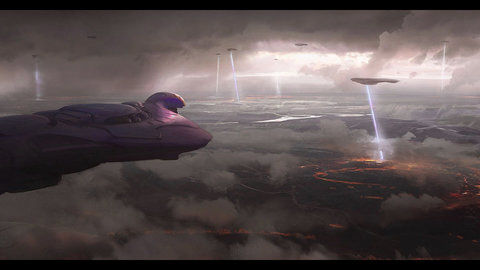
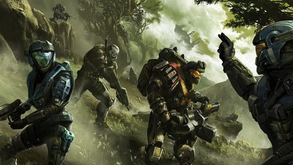
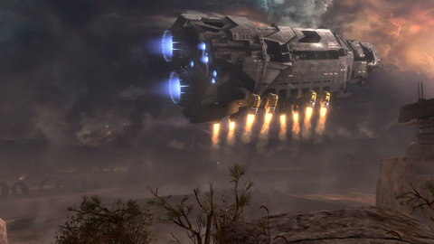

Halo: Reach es un juego de Disparos en Primera Persona (FPS), desarrollado por Bungie y distribuido por Microsoft Studios. La historia se sitúa en el año 2552, 21 años después de los hechos de Halo Wars, y semanas antes de los eventos ocurridos (y el final en apenas unos segundos) en Halo: Combat Evolved, lo que lo convierte en su precuela directa. El juego fue anunciado en el E3 2009 por Joe Staten y su lanzamiento fue en Septiembre 14 de 2010 exclusivamente para la consola Xbox 360. La fecha originalmente planeada para su lanzamiento fue el 30 de Marzo, pero las programaciones del videojuego fueron las razones del retraso.
- “Quick” Joining:
En Halo 3, era difícil unirse con amigos que ya estaban jugando en una partida. Había que esperar hasta que terminaran. En lugar de ir adelante y atrás, Reach apoyará la Quick Joining. En pocas palabras, Reach lo unirá automáticamente tan pronto como tus amigos se acoplen.
- Veto 2.0:
Halo Reach utilizará un nuevo sistema de votación, que Bungie lo describe como “Veto 2.0”. Cada lista será dada a los jugadores con cuatro opciones. La primera será una combinación del mapa y tipo de juego, al igual que en Halo 3. Las otras tres opciones se ofrecen a los jugadores como opciones adicionales a votar. Afortunadamente, usted sabrá de antemano lo que ofrecen sus cuatro opciones para que ya no tengan el riesgo de un Voto que lo desfaboresca.
Arena:
Posiblemente el mayor cambio en Halo Reach es la Arena. Básicamente es un conjunto de Slayer y Team Slayer para los Hardcore. Si eso no fuera suficiente, los jugadores serán evaluados y se colocaran en los Ranking de Habilidad del Mes..
- Horas y horas de diversion al lado de tus amigos.
  
Titulo: HALO REACH
Año: 2009
Genero: FPS
Tamaño: Pesa un chingo :v
Editor: Bungie Studios
Descarga aquí
Contraseña: kev.perron